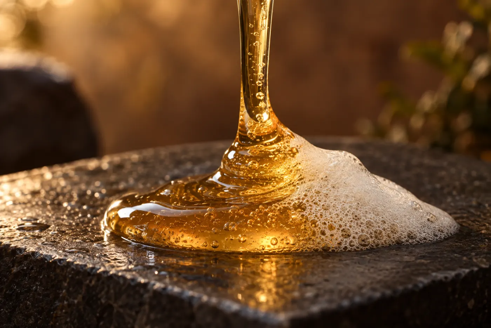
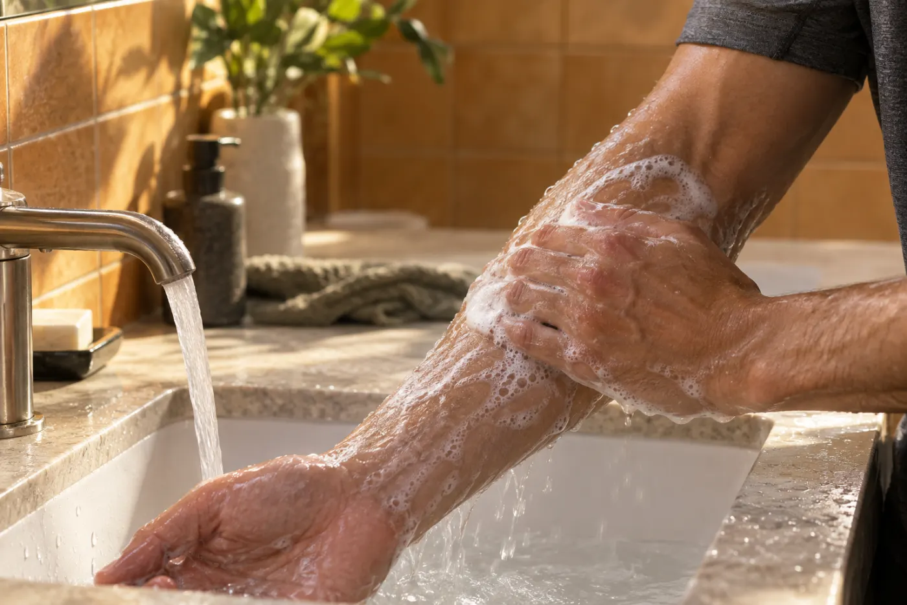
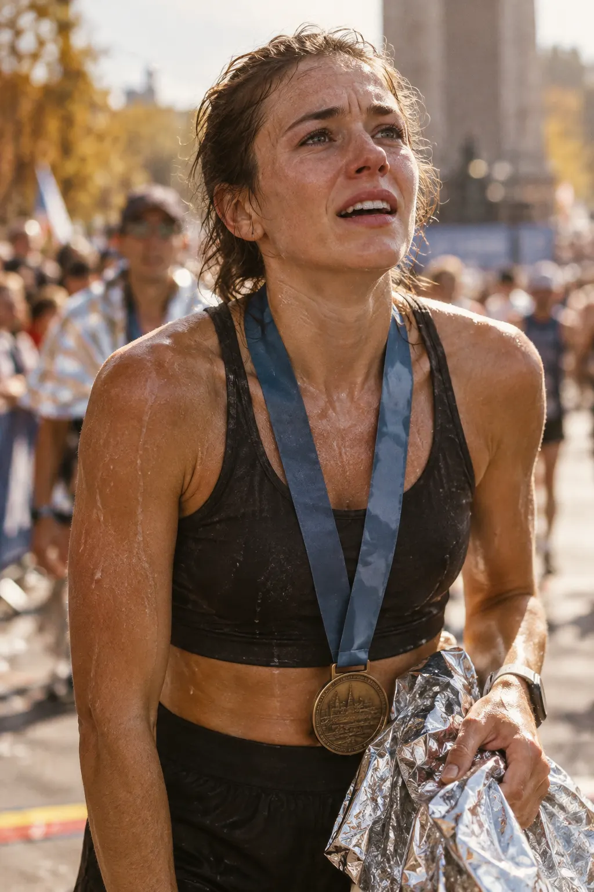
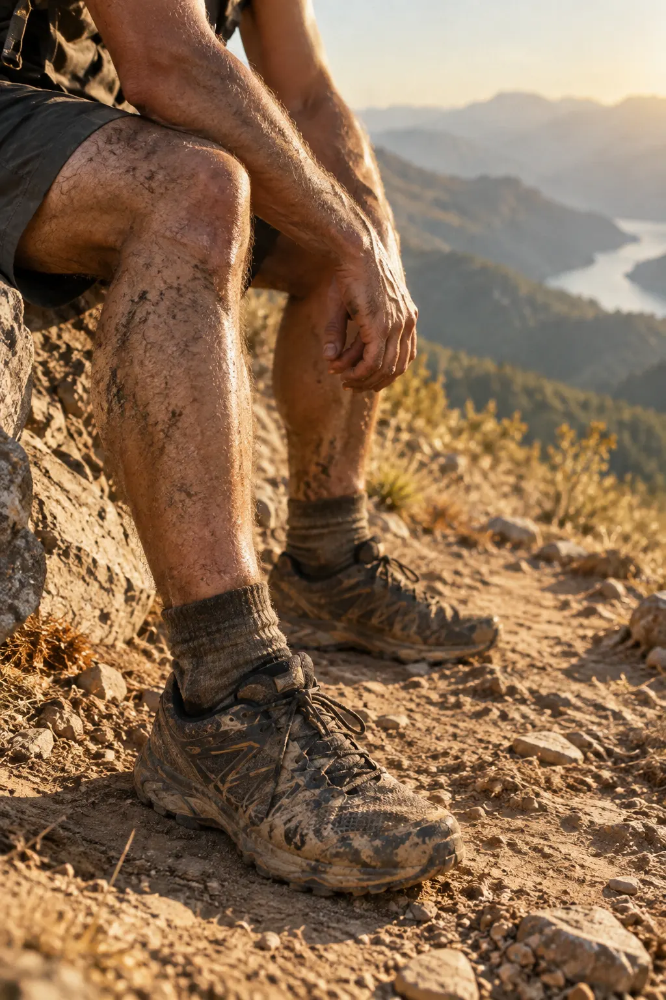
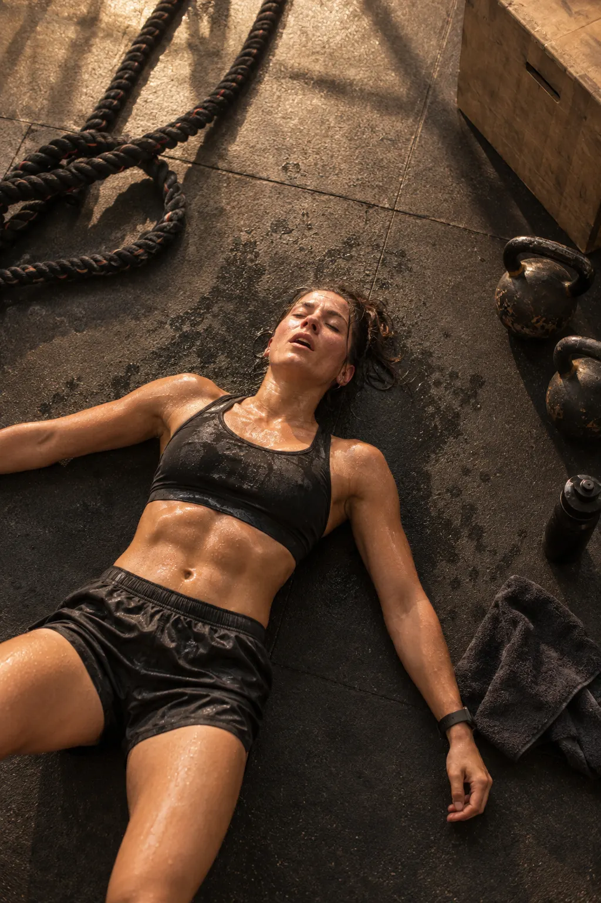

Active Ingredients · 精選成分
洗得乾淨，
也不讓肌膚緊繃。
舒緩訓練後的肌膚乾燥，每次清潔都是一次清爽重啟。
- 1Argan Oil
摩洛哥堅果油
極致滋潤，補充訓練後肌膚流失的水分與油脂。
- 2Panthenol + Tocopherol
維他命 B5 + E
深層滋潤並強化肌膚屏障，提升對環境傷害的保護力。
- 3Helichrysum Extract
蠟菊萃取
溫和呵護，舒緩訓練後因乾燥引起的肌膚不適感。


When to Use · 適用場景
一場硬仗之後
一般沐浴乳無法深入毛孔，運動後的汗脂殘留讓肌膚持續悶熱不適。

①長距離比賽之後
馬拉松、鐵人三項完賽，全身又黏又臭。

②戶外訓練、越野與登山
汗水混著塵土，洗完澡衣服一穿上又有異味。

③健身與高強度訓練
大量出汗後，毛孔裡的汗脂需要被深層洗淨。
How to Use · 使用方法
趁護髮乳停留時
使用方法待提供
護髮乳停留的 3–5 分鐘，正好用來洗身體，最後一起沖淨。
Specification · 產品規格
產品規格
完整標示請以瓶身背標為準。
- 品名Name
- PLUS ONE 運動深層沐浴露 Body Wash For Active Body
- 適用For
- 適合一般至油性肌膚、訓練後使用。
- 容量Volume
- 500 mL
- 香調Scent
- 溫暖琥珀木質調
- 標示成分Key Ingredients
- Argan Oil, Vitamin B5 + E, Helichrysum Extract, Betaine Anhydrous
- 全成分Ingredients
- 待提供（請依瓶身背標）
- 產地Origin
- 台灣 Made in Taiwan

比賽後全身又黏又臭，以前只能用普通沐浴乳勉強撐過。現在換了 PLUS ONE，真的感覺毛孔被清乾淨，肌膚沒有以前訓練後的那種緊繃不適感。林佳蓉 Chia-Jung Lin · Triathlete · IRONMAN 70.3 Finisher
Complete the System
搭配另外兩步
先洗頭皮，再護髮絲，最後洗身體。